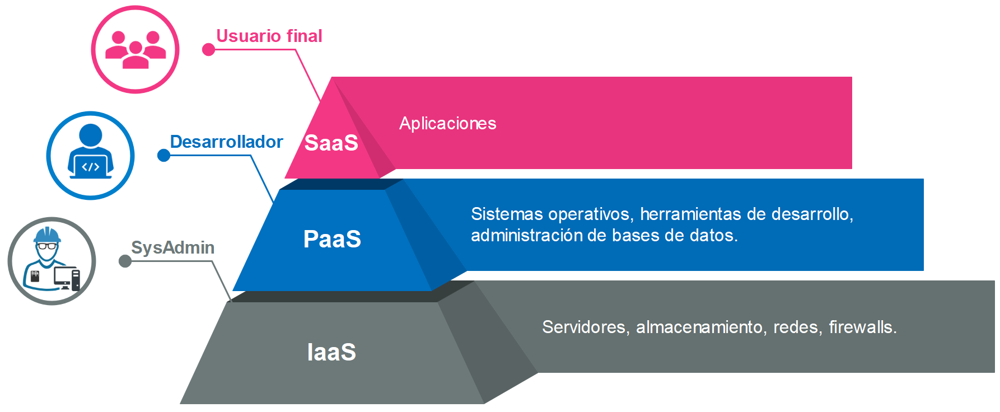

Tipso de servicio en la nube

Hay cuatro tipos principales de cloud computing: las nubes públicas, las nubes privadas, las nubes híbridas y las multiclouds. También hay tres tipos de servicios de cloud computing fundamentales: la infraestructura como servicio, (IaaS), la plataforma como servicio (PaaS) y el software como servicio (SaaS).
La elección del tipo de nube o servicio de nube es una decisión única. Las nubes nunca son iguales (incluso si corresponden al mismo tipo); cada una de ellas sirve para resolver un problema distinto. Sin embargo, si comprende cuáles son sus similitudes, entenderá las limitantes de cada tipo de cloud computing y servicio de nube, y sabrá cómo pueden afectar a su negocio.
Tipos
- Nubes públicas
- Las nubes públicas son entornos de nube que suelen crearse a partir de una infraestructura de TI ajena al usuario final. Algunos de los principales proveedores de nubes públicas son Alibaba Cloud, Amazon Web Services (AWS), Google Cloud, IBM Cloud y Microsoft Azure.
Antes las nubes públicas se ejecutaban fuera de las instalaciones de las empresas, pero los proveedores de nube pública actuales han comenzado a ofrecer estos servicios en los centros de datos on-premise de los clientes. Debido a esto, ciertos aspectos que antes nos permitían distinguir entre ellas, como la ubicación y la propiedad, quedaron obsoletos.
- Nubes privadas
- En términos generales, las nubes privadas son entornos de nube que se destinan exclusivamente a un usuario o grupo final, y que normalmente se ejecutan detrás de su firewall. Las nubes se vuelven privadas cuando la infraestructura de TI subyacente se destina a un solo cliente con acceso completamente aislado.
Sin embargo, ya no es necesario que provengan de la infraestructura de TI on-premise. Actualmente, las empresas diseñan nubes privadas en centros de datos alquilados de terceros que se encuentran fuera de las instalaciones, lo cual hace que todas las reglas de ubicación y propiedad queden obsoletas. Esto también ha dado lugar a varios subtipos de nubes privadas, entre los que se incluyen las siguientes:
- Nubes privadas gestionadas
- Los clientes crean y usan una nube privada que implementa, configura y gestiona un proveedor externo. Las nubes privadas gestionadas son una oferta de nube que permite que las empresas con equipos de TI sin personal suficiente o sin las habilidades necesarias presten mejores servicios de nube privada e infraestructura.
- Nubes hibridas
- La nube híbrida es un entorno de TI aparentemente único creado a partir de múltiples entornos que se conectan mediante redes de área local (LAN), redes de área amplia (WAN), redes privadas virtuales (VPN) o API.